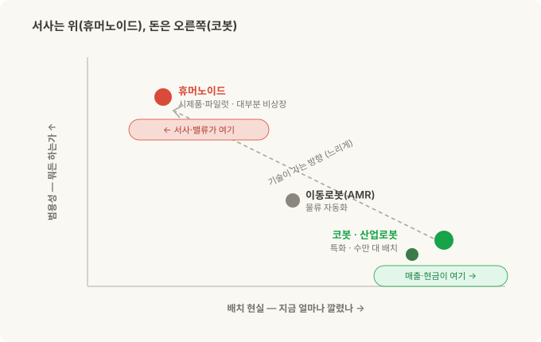
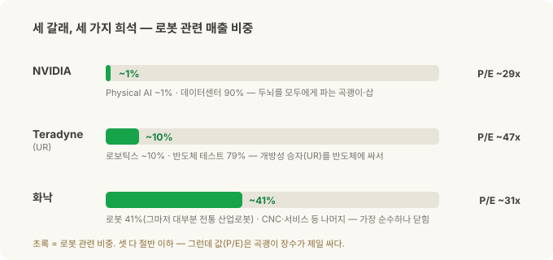
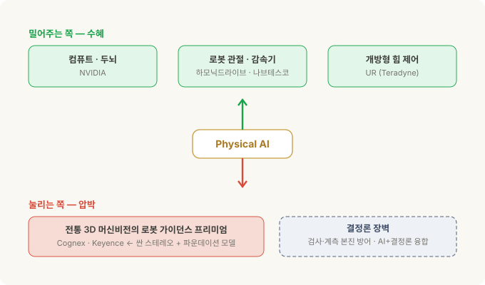
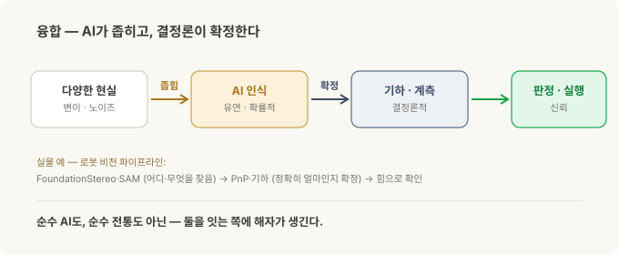

Physical AI에 투자한다면 — 순수 플레이는 없고, 가치는 이동한다¶
코봇 3부작 · 3부(완결). 1부는 코봇이 무엇인가, 2부는 UR vs 화낙(FANUC)을 '개방성'으로 갈랐습니다. 이번엔 그걸 투자와 연결합니다 — Physical AI가 진짜라면, 우리는 그걸 어떻게 사는가.
앞의 두 편에서 Physical AI가 진짜라는 걸 봤다고 칩시다. AI가 로봇의 눈과 손이 되고(로봇 비전 시리즈), 그 승부를 가르는 건 스펙이 아니라 '개방성'이었죠(2부).
그럼 자연스러운 다음 질문. "그래서, 어디에 투자하지?"
나쁜 소식부터. 깔끔하게 살 수 있는 종목이 없습니다. 'Physical AI 순수주'를 검색하면 나오는 이름들 — NVIDIA, Teradyne, 화낙 — 은 셋 다 서로 다른 방식으로 희석된 노출이에요. 그리고 좋은 소식. 그래서 이 글의 질문은 "무슨 종목을 사냐"가 아니라 "가치가 어디서 어디로 이동하나"입니다. 그 지도를 그리는 게 훨씬 남는 장사예요.
30초 요약¶
- 서사는 휴머노이드, 돈은 코봇. 요즘 Physical AI 하면 떠오르는 건 사람처럼 걷는 로봇인데, 그건 대부분 시제품·파일럿이고 대부분 비상장입니다. 실제로 매출을 내는 건 공장에 이미 수만 대 깔린 코봇·산업로봇이에요.
- 순수 플레이는 없다. 미국 대형주 중에 "코봇만" 혹은 "Physical AI만" 파는 회사가 없어요. 가장 가까운 건 소형(한국 두산로보틱스)·중국(휴머노이드 UBTech·Unitree)이거나, 아예 티커가 안 생긴 것 — 한때 기대됐던 ABB 로보틱스 분사는 상장 대신 소프트뱅크에 매각됐습니다.
- 세 갈래, 세 가지 희석. NVIDIA = 모두에게 두뇌를 파는 곡괭이·삽(단 Physical AI는 매출의 ~1%, 90%가 데이터센터). Teradyne = UR을 가진 개방성 승자(단 매출의 ~10%, 79%가 반도체 테스트). 화낙 = 가장 순수한 자동화(단 로봇은 41%이고 대부분 전통 산업로봇, 중국 경기민감).
- 밸류에이션 반전. 이익 대비(P/E)로 보면 NVDA가 셋 중 제일 싸고(~29배), 코봇 주인 TER이 제일 비쌉니다(~47배). 곡괭이 장수가 광부보다 싸게 거래되는 아이러니.
- 가치는 이동한다. Physical AI가 밀어주는 쪽(컴퓨트·로봇 관절 감속기·개방형 힘 제어)과 눌리는 쪽(전통 3D 머신비전의 로봇 가이던스 프리미엄)이 갈립니다.
- 진짜 해자 = 융합. AI는 비결정론적, 산업검사는 결정론적. 이 둘을 연결하는 쪽이 이깁니다. 순수 AI도, 순수 전통도 아닌.
- 이 글은 종목 추천이 아니라 관점입니다. 맨 아래 고지를 읽어주세요.
서사는 휴머노이드, 돈은 코봇¶
투자 얘기 전에 판을 깔아야 합니다. Physical AI라는 말에 사람들은 두 가지 다른 그림을 겹쳐 떠올려요.
- 휴머노이드 — 사람처럼 두 다리로 걷고 두 팔로 뭐든 하는 로봇. "사람 자리에 그냥 투입"하는 범용의 꿈.
- 코봇/산업로봇 — 테이블에 고정된 팔 하나. 한 자리에서 한 작업을 정밀하게 반복.
둘은 성숙도가 완전히 다릅니다.
| 코봇 (협동로봇) | 휴머노이드 | |
|---|---|---|
| 형태 | 고정 베이스 + 한 팔 | 두 다리 + 두 팔, 전신 |
| 지금 상태 | 현장에 수만 대, 돈을 번다 | 대부분 시제품·파일럿 |
| ROI | 검증됨(지루하지만 확실) | 미검증, 비싸고 어려움 |
| 잘하는 것 | 한 자리 한 작업 | 범용 — "뭐든" (아직 꿈) |
| 남은 숙제 | 성숙 단계 | 보행·배터리·손 기민성·안전·원가 전부 |
| 상장 접근성 | 상장(단 희석) | 대부분 비상장 |
핵심은 이겁니다. 뜨거운 서사와 밸류에이션은 휴머노이드에 쏠려 있는데, 실제 매출과 현금흐름은 코봇·산업로봇에서 나옵니다. 사람처럼 걷는 로봇 영상이 조회수를 먹는 동안, 정작 돈은 자동차 공장에서 조용히 용접하는 팔에서 돌아요.
그리고 여기 함정. 뜨거운 쪽(휴머노이드)은 대부분 못 삽니다 — Figure, Agility, Apptronik, 1X 같은 서구 유력 주자가 죄다 비상장이에요. 상장된 순수 휴머노이드는 중국계뿐 — UBTech, 그리고 Unitree(2026년 8월 상장 첫날 +487%) 정도. 살 수 있는 쪽(코봇)은 죄다 큰 회사의 일부라 희석돼 있고요.
이 간극 — 사고 싶은 건 못 사고, 살 수 있는 건 희석돼 있다 — 이 3부 전체의 출발점입니다.

순수 플레이는 없다¶
"Physical AI 순수주 하나만 콕 집어줘"에 대한 정직한 답은 "미국 대형주엔 없다"입니다.
- 두산로보틱스(한국 상장) — 상장된 코봇 순수주에 가장 근접하지만 소형이고 한국 상장이라 접근성·유동성이 제한적.
- UBTech·Unitree(중국 상장) — 실제로 상장돼 매출도 내는 휴머노이드 순수주(단 아직 휴머노이드 매출은 각각 1억 달러 안팎). 산업 코봇이 아니고 중국 상장이라는 벽.
- Symbotic(SYM) — 미국 상장 중 Physical AI 순수주에 가장 근접하지만, 실은 매출의 ~85%가 월마트인 창고 자동화 프록시. 순수 코봇도 휴머노이드도 아님.
- ABB 로보틱스 — 무산. 한때 로보틱스 부문을 별도 상장으로 분사한다던 ABB는 계획을 접고 소프트뱅크에 통째로 매각(약 54억 달러, 2025년 말 발표)하기로 했어요. 즉 여기서도 새 티커는 안 생깁니다.
- 그 외 Yaskawa·Rockwell·Intuitive Surgical 등은 전부 분산형이거나 다른 도메인(수술로봇 등)이라 코봇 순수주가 아닙니다.
결론: 지금 이 판을 미국 대형주로 깔끔하게 사는 길은 없습니다. 그래서 실제로 손에 쥘 수 있는 세 이름 — NVIDIA·Teradyne·화낙 — 을 뜯어보되, 각자 어떻게 희석돼 있는지를 봐야 해요.
세 갈래 노출 — 각자 다르게 희석돼 있다¶
세 이름 모두 로봇 노출이 매출의 절반을 못 넘깁니다 — 각자 다른 것에 희석돼 있어요. 한눈에 보면 이렇습니다.

NVIDIA — 모두에게 두뇌를 파는 곡괭이·삽¶
Physical AI에서 NVIDIA의 자리는 "골드러시에 청바지·곡괭이 파는 상인"입니다. 누가 로봇 전쟁에서 이기든, 그 로봇의 두뇌와 훈련장은 NVIDIA에서 나와요. 실제로 2부의 두 주인공 UR(Teradyne)에도, 화낙에도 NVIDIA가 컴퓨트를 팝니다 — 중립적 무기상.
- 두뇌: Jetson Thor(로봇용 온보드 컴퓨터). 훈련장: Isaac Sim·Omniverse(디지털 트윈 시뮬레이션), Cosmos(월드 모델). 모델: Isaac GR00T N1 — 휴머노이드용 개방형 비전-언어-행동 파운데이션 모델.
- 젠슨 황의 "Physical AI가 다음 물결" 서사는 진짜입니다. 제품은 실재하고 앞서 있어요.
그런데 손익계산서에선 반올림 오차입니다. NVIDIA 매출(2026 회계연도 약 2,160억 달러)의 ~90%가 데이터센터고, 로봇이 속한 '자동차·로보틱스'는 ~1%, 그마저 대부분 자동차라 순수 로봇은 1% 미만이에요. 즉 "Physical AI 때문에 NVDA 산다"는 건, 시가총액 5.5조 달러 규모의 데이터센터 회사 속의 아주 얇은 조각을 아주 비싸게 사는 셈.
- 아이러니: 그런데도 이익 대비로는 셋 중 제일 쌉니다(P/E ~29배) — 이익이 워낙 빠르게 늘어서요.
- 한 줄 요약: 기술은 정답, 노출은 극소량, 값은 데이터센터가 정한다.
Teradyne(TER) — UR을 사는 가장 직접적인 길, 반도체 테스트에 싸여¶
2부의 개방성 승자 Universal Robots를 공개시장에서 사는 가장 직접적인 통로가 Teradyne입니다. UR + MiR(이동로봇)이 Teradyne의 로보틱스 부문이에요.
- UR은 "Physical AI의 선호 플랫폼"을 자처하고, NVIDIA 기반 'AI Accelerator'를 내놓는 등 2부의 개방성을 그대로 밀고 있습니다.
- 문제는 비중. 로보틱스는 Teradyne 매출의 ~10%(2025년 약 3억 달러, 이 중 UR이 대부분). 나머지 79%는 반도체 테스트 장비예요. 즉 TER은 본질적으로 반도체 테스트 회사고, 코봇은 곁가지.
- 더 미묘한 함정: TER의 요란한 "AI" 스토리는 사실 AI 칩을 테스트하는 반도체 장비 쪽이지, Physical AI 코봇이 아닙니다. 이름은 같은 'AI'라 헷갈리기 딱 좋아요.
단, 쇠퇴로 못 박으면 안 됩니다. 로보틱스는 2025년 두 차례 구조조정(손익분기 매출을 $440M→$365M로 낮춤) 뒤 반등 중 — 2026년 2분기 분기 사상 첫 $100M(+33%)를 찍었어요. 곁가지지만 다시 자라는 곁가지.
- 밸류에이션: 셋 중 제일 비쌉니다(P/E ~47배) — AI 칩 테스트 + 로보틱스 반등을 이미 값에 담아서.
- 한 줄 요약: 개방성 승자(UR)를 가장 직접 사지만, 반도체 테스트 사이클에 싸여 온다.
화낙(FANUC) — 셋 중 가장 순수한 로보틱스, 그런데 '닫힌' 쪽¶
셋 중 가장 순수한 공장자동화 회사는 화낙입니다. 로봇 + CNC + 로보머신, 전부 자동화예요.
- 체력은 최고. 무차입·순현금 약 51억 달러, 영업이익률 ~21%의 고수익 구조. 배당도 줍니다(수익률 ~1.9%).
- 그런데도 '순수'는 아니에요. 로봇은 매출의 41%, 나머지는 CNC/FA(24%)·로보머신(17%)·서비스로 쪼개집니다. 게다가 그 로봇 41%도 대부분 전통 산업로봇이지 코봇(CRX)이 아니에요.
- 그리고 2부의 '닫힌' 쪽. 개방성 축에선 화낙이 뒤처졌죠. 다만 2025년 말 NVIDIA와 손잡고(Jetson·Isaac Sim·Omniverse를 ROBOGUIDE에 통합) 개방에 착수했고, 화낙은 발표 직후 AI 로봇 1,000대+ 수주를 밝혔습니다 — 헤지는 시작됐어요.
- 접근성 주의: 도쿄 상장(6954)이 본체고, 미국 ADR(FANUY)는 OTC에 1 ADR = 0.1주라 상대적으로 얇습니다. 그리고 매출이 중국 경기(특히 EV 설비투자)에 크게 흔들려요.
- 밸류에이션: P/E ~31배(중간). 한 줄 요약: 가장 순수한 로보틱스 체력주지만, 논지의 닫힌 쪽 + 중국 사이클.
한 장 비교¶
| NVIDIA | Teradyne(UR) | 화낙 | |
|---|---|---|---|
| Physical AI 순수도 | 극소(~1%, 대부분 자동차) | 낮음(로보틱스 ~10%) | 중간(로봇 41%, 대부분 산업용) |
| 2부 개방성 위치 | 조력자(양쪽에 판매) | 열림(UR) | 닫힘(+NVIDIA 헤지) |
| 희석 요인 | 데이터센터 90% | 반도체 테스트 79% | CNC·로보머신·서비스 + 중국 |
| 체력 | 초고성장 | 반도체 사이클 | 무차입·순현금·고마진 |
| 밸류(P/E, 근사) | ~29배(최저) | ~47배(최고) | ~31배 |
| 접근성 | 대형·유동성 최상 | 대형 | 6954 본체 / FANUY 얇음 |
(수치는 2025~2026 시점 근사치. 시점·환율·AI 사이클에 따라 움직입니다.)
가치는 어디서 어디로 — 이동 지도¶
종목 세 개로 끝내면 반쪽입니다. Physical AI의 진짜 그림은 가치가 어디서 어디로 옮겨가나예요. 두 방향이 있습니다.
밀어주는 쪽(수혜): - 컴퓨트 — NVIDIA. 누가 이기든 두뇌는 여기서. - 로봇 관절 = 감속기 — 하모닉드라이브(6324)·나브테스코(6268) 같은 정밀 감속기 회사. 모든 로봇팔과 휴머노이드가 관절마다 이걸 씁니다. 로봇 회사보다 감속기 회사가 더 순수한 로봇 베팅일 수 있어요 — 누가 이기든 관절은 다 여기서 나오니까. 진짜 곡괭이·삽. (단 주의: 중국 감속기 업체(Sanhua·Leaderdrive 등)가 원가 민감한 휴머노이드 관절에서 치고 들어와, 일본 과점이 영원하진 않습니다.) - 개방형 힘 제어 — 2부의 그 축. UR(Teradyne)처럼 AI가 힘까지 만질 수 있게 열어둔 쪽.
눌리는 쪽(압박): - 전통 3D 머신비전의 로봇 가이던스 프리미엄 — Cognex(CGNX)·Keyence(6861) 같은 회사가 비싼 독점 3D 비전으로 풀던 "로봇에게 어디를 잡을지 알려주는" 일. 이제 싼 스테레오 카메라 + 파운데이션 모델(당신이 로봇 비전 시리즈에서 본 그 파이프라인)이 잠식합니다. 예전의 "비싼 3D 스캐너 + 독점 SW + 비전 엔지니어" 묶음이 얇아져요.

결정론 장벽 — 그런데 왜 안 죽나¶
여기서 멈추면 "전통 비전은 끝"이라는 성급한 결론이 됩니다. 아니에요. 잠식엔 벽이 있습니다.
산업검사가 요구하는 건 결정론입니다 — 매번 똑같은 답을 주고, 이력을 추적할 수 있고, 합격·불합격이 인증되고, 불량은 절대 통과시키지 않는 것. 반면 AI 파운데이션 모델은 비결정론적이에요 — 유연하지만 확률적이고, 가끔 환각하고, "94% 양품 같음"은 안전·품질 게이트에 그대로 못 넣습니다.
이 둘은 정면으로 충돌합니다. 그래서 가치가 자리 잡는 곳은 대체가 아니라 융합이에요.
AI가 좁히고, 결정론이 확정한다. AI는 어려운 '알아보기'(물체를 찾아내고, 조금씩 다른 모양도 알아채는 일)를 맡고, 전통 비전·기하는 '정밀히 재서 판정하기'(정확히 재고, 딱 떨어지는 합격선을 긋는 일)를 맡습니다.
이게 바로 당신의 로봇 비전 파이프라인입니다 — FoundationStereo·SAM(AI, 유연)으로 "어디/무엇"을 찾고, 기하 계산(늘 같은 답을 주는 수학)으로 "정확히 얼마"를 확정하고, 힘으로 확인해 잡죠. 융합은 이미 그 글이 증명한 아키텍처예요.

그래서 투자로 보면: - 기존 강자가 방어되는 진짜 이유 — Cognex·Keyence는 결정론·인증 레이어를 이미 소유하고, 그 위에 AI를 얹을 수 있습니다. 로봇 가이던스 세그먼트는 눌리되, 검사·계측·판독 본진은 방어될 가능성이 큽니다. 융합 레이어를 쥐고 있으니까. - NVIDIA는 대체자가 아니라 조력자 — AI 층은 주지만 결정론적 판정은 안 줍니다. 기존 강자를 죽이는 게 아니라 그들의 융합을 가능케 해요.
실제로 Cognex·Keyence는 이 논지가 고통을 예언한 바로 그 시기(2025~2026)에도 매출이 ~9%씩 늘었습니다. 압박은 '매출 붕괴'가 아니라 3D 가이던스 최전선의 마진·믹스 압박이에요. 그 최전선이 진짜라는 신호는 따로 있죠 — 인텔 RealSense가 2025년 별도 회사로 분사해 로봇 쪽으로 방향을 튼 것, NVIDIA의 FoundationStereo·FoundationPose가 Isaac ROS로 실려 나온 것. 잠식은 오고 있되, 본진이 아니라 최전선에서 옵니다.
마무리 — 진짜 해자는 '융합'¶
정리하면, Physical AI 투자엔 깔끔한 순수 플레이가 없습니다. NVDA는 노출이 얇고, TER은 반도체에 싸여 있고, 화낙은 쪼개져 있고 닫혀 있어요. 뜨거운 휴머노이드는 대부분 못 삽니다.
그래서 종목 하나를 고르는 게임이 아니라, 가치가 어디로 이동하는지를 읽는 게임입니다. 그리고 그 이동의 종착지는 하나로 모여요.
순수 AI 스타트업은 산업 현장에서 결정론 요구사항을 못 맞춥니다. 전통적인 기존 산업 현장의 강자들은 AI의 다양성을 못 받습니다. 이기는 건 둘을 융합해 소유한 쪽이에요. 2부의 개방성이 여기서 다시 살아납니다 — 열려 있어야 AI 둘레에 결정론적 검증 층을 끼워 넣을 수 있거든요. 닫히면 그 층을 못 붙입니다.
곡괭이(NVDA)는 팔리고, 관절(감속기)은 돌아가고, 개방형 팔(UR)은 AI를 받아들이고, 결정론을 쥔 눈(Cognex/Keyence)은 AI를 흡수할 공산이 큽니다. Physical AI의 진짜 해자는 로봇을 만드는 쪽도, AI를 만드는 쪽도 아니라, 둘을 연결하는 쪽에 생깁니다.
3부작을 여기서 닫습니다. 코봇이 무엇이고(1부), 무엇이 그들을 가르며(2부), 그 판을 어떻게 읽고 투자하나(3부) — 관통하는 한 단어는 결국 개방성, 그리고 그 위에 세워지는 융합이었습니다.
정리¶
| 관점 | 요점 |
|---|---|
| 서사 vs 매출 | 서사·밸류는 휴머노이드(대부분 비상장), 매출·현금은 코봇/산업로봇 |
| 순수 플레이 | 미국 대형주엔 없음(두산=소형·한국, UBTech/Unitree=중국 휴머노이드, ABB=소프트뱅크 매각) |
| 세 종목 한 줄 | NVDA=얇지만 값은 최저 · TER=개방성 승자지만 반도체에 싸임 · 화낙=순수 체력주지만 닫힘 |
| 가치이동 | 수혜: 컴퓨트·감속기·개방형 힘제어 / 압박: 전통 3D 비전의 로봇 가이던스 |
| 볼 것(리스크) | 중국 감속기 경쟁 · 화낙 중국 사이클 · FANUY 유동성 · Symbotic의 월마트 집중 |
| 진짜 해자 | 융합 — 비결정론(AI) + 결정론(산업검사)을 연결하는 쪽 |
관련: 협동로봇(cobot)이란 · UR vs 화낙 — 개방성 · 스테레오 비전에서 목표물 잡기까지 · Jetson·ROS 2 셋업 — 현장 노트 (1)
출처와 표기¶
재무 수치는 각 사의 공시·실적 발표(2025~2026 회계연도)와 공개 시장 데이터 기준이며, 시가총액·P/E·세그먼트 비중·매출은 시점·환율·회계연도 관행에 따라 달라지는 근사치입니다. 밸류에이션은 특정 시점의 대략적 참고치일 뿐 목표가가 아닙니다. 회사·플랫폼·제품명(NVIDIA·Jetson·Isaac·GR00T, Teradyne·Universal Robots·MiR, FANUC·CRX·ROBOGUIDE, Cognex, Keyence, ABB, 하모닉드라이브, 나브테스코, Unitree, 두산로보틱스 등)은 각 소유사의 상표이며 지칭 목적으로만 사용했습니다. 본 글은 특정 종목의 매수·매도 권유나 투자 자문이 아니며, 저자는 어떤 투자 결과에 대해서도 책임지지 않습니다. 투자 판단과 그 결과는 전적으로 독자 본인의 몫입니다.
용어 설명¶
- Physical AI — AI가 시뮬레이션·화면을 넘어 물리 세계에서 로봇을 통해 인식·행동하는 흐름
- 순수 플레이(pure-play) — 한 사업에만 집중해 그 테마를 '깔끔하게' 대표하는 종목
- 곡괭이·삽(picks and shovels) — 골드러시에서 금 대신 장비를 팔아 버는 전략. 승자가 누구든 수혜
- P/E(주가수익비율) — 주가 ÷ 주당순이익. 낮을수록 이익 대비 싸다는 뜻(단순화)
- ADR — 외국 주식을 미국 시장에서 거래하도록 만든 예탁증서(FANUY = 화낙 ADR)
- 반도체 테스트(ATE) — 칩이 제대로 작동하는지 검사하는 장비. Teradyne의 본업
- 감속기(reducer) — 모터의 빠른 회전을 로봇 관절의 느리고 힘센 움직임으로 바꾸는 정밀 부품
- GR00T — NVIDIA의 휴머노이드용 개방형 행동 파운데이션 모델
- 결정론 / 비결정론 — 같은 입력에 늘 같은 답(결정론)이냐, 확률적으로 달라질 수 있느냐(비결정론)
- TAM — 이론상 최대 시장 규모(Total Addressable Market)